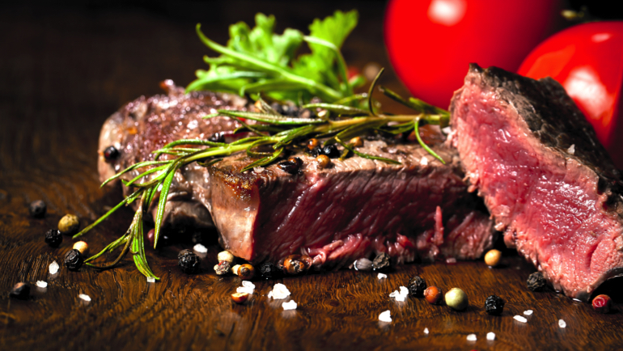
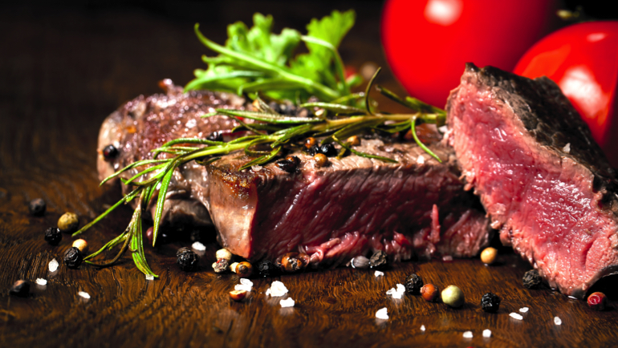

Rundvlees, is de verzamelnaam van vlees van de koe, de stier of de os (gecastreerde stier). Ook kalfsvlees is rundvlees, ondanks dat het door de aparte kwaliteit in een andere categorie valt. Het is een over het algemeen sappige en rode vleessoort. Bereidingswijze kan verschillen van rauw hakken, bakken, koken en grilleren tot stoven, afhankelijk van welk deel van het rund het vlees wordt bereid en de leeftijd en mestwijze van het rund.
 
